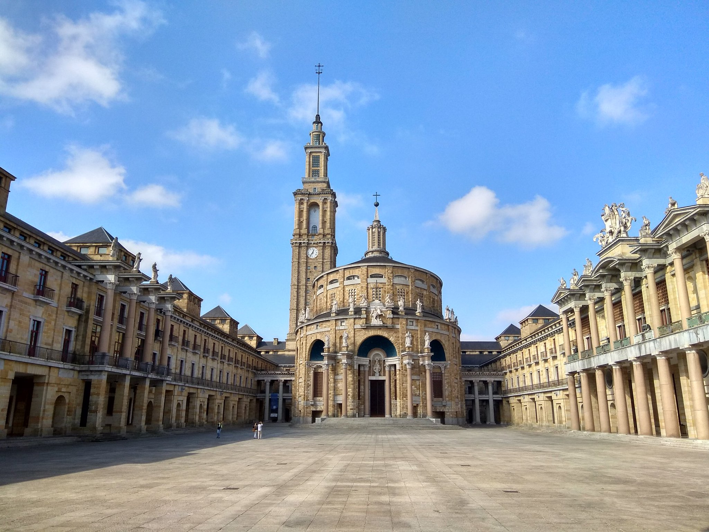

La Universidad Laboral de Gijón se encuentra situada en el municipio de Gijón (Asturias, España), concretamente en la parroquia de Cabueñes, a poco más de tres kilómetros del centro urbano.
Construida entre 1946 y 1956, es la obra arquitectónica más importante realizada en el siglo XX en Asturias. Con sus 270 000 m2,es el edificio más grande de España. Está declarada Bien de interés cultural con la categoría de Monumento desde 2016
A mediados de los años 1940, como consecuencia de un accidente laboral en una mina de la cuenca del Caudal, el subsecretario del Ministerio de Trabajo, Carlos Pinilla Turiño, que acudio al funeral de las víctimas de dicho accidente, se reunión en Gijón con un grupo de personalidades locales como Alejandro Pidal Guilhou, Alvaro Armada Ulloa, octavo conde de Revillagigedo , y Ricardo Heredia Guilhou, tercer conde de Benahavís, lideradas por el industrial minero José Maria Fernández "el Póntico", para impulsar la creación de un orfanato minero con la intención de ayudar a los afectados. Esta institución se constituyó de manera formal en escritura pública otorgada ante notario el 6 de octubre de 1945 con el nombre de Fundación "José Antonio Girón", en homenaje al entonces ministro de Trabajo.
El objetivo fundacional concreto fue el de formar a niños huerfanos de padres victimas de accidentes laboreles en la mineria, para lo que se proyéctó un edificio que pudiera atender a mil alumnos y que contara con las distintas dependencias requeridas para el desarrollo de la vida estudiantil, como residencia, escuela, talleres industriales, granja, instalaciones deportivas o campos de cultivo. El Ministerio de Trabajo encomendó a la Junta del Patronato de la Fundación la responsabilidad de llevar adelante la obra por Orden de 14 de junio de 1946. Para ello se adquirieron en la carretera de Gijón a Villaviciosa unos terrenos con una superficie de 1 554 572 m2, de los que 381551 m2 lo fueron mediante el trámite de expropiación forzosa. Otra superficie complementaria, de 1 464 300 m2, se adquirió para la Granja Lloreda, en el Infanzón .